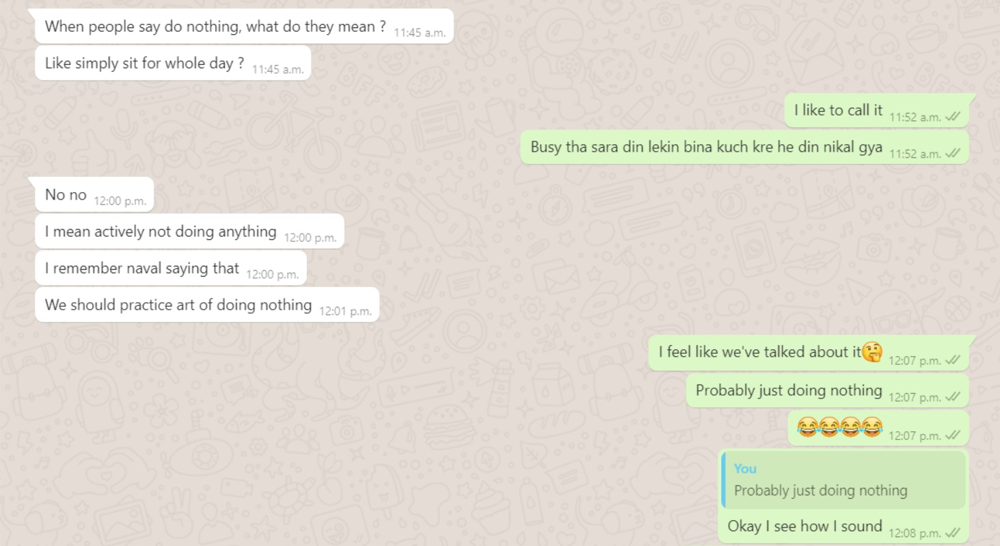

The Art of Doing Nothing
How it started
Storytime, when I used to work as a host at a restaurant
A typical restaurant gets busy at evening or night, or rarely brunch-ish time. The rest of the time, it's not busy, and there's not much work to do. But my co-workers were still doing work at that time, cleaning tables, utensils, countertops, etc. Mostly I didn't do any of that, which pissed them off. Meanwhile, I was standing still. Just observing random stuff around me, falling leaves, a kid smiling, watching my breath, thinking about anything(from something I read, assignments, making jokes). I was doing all that, standing still, not doing "work". You can see why it pissed off everyone. Me standing still while co-workers were doing "WORK." When someone asked me to join them in doing "work", I'd make mock them sarcastically. Saying, "So you want me to clean the tables which are already clean? Correct? You see the error in what you're asking me to do." The reason I said "WORK." To make things more fun for me. I'd mention all the corners, photo frames, the not-so-obvious places that they missed. I was able to see all this because I was observing anything around me, my breath, passing-by people, and weirdly including furniture of restaurant. I'd mock them to make them aware that they're not doing work as much as doing work to fill their time up. Sometimes I'd challenge my co-workers - "Let's see who can 'do nothing' for longer."
Different forms of fooling yourself by being productive
This sieves into our lives in different forms.
The urge to consume that pending article, podcast, watch something educational when taking a walk, or
sitting in a bus/car.
Sunday passes by before you notice it because so much work came up.
Ever heard of it? Keep yourself busy- you won't think about it.
.png)
But isn't it better to use "this time I was gonna waste" to do something "more productive"?
Yes & No. I'm not saying if you're using that time to be more productive, it's a bad thing. It depends. Just because you're doing something doesn't mean it's essential. There's a fine line between work you should do and work you made up to run away from your default thoughts? Go ahead and watch that educational video on YouTube if you're aware of the difference. Just don't fool yourself that you're doing one thing disguised as another. For example: reading is my escape, but sometimes it's essential.
But how to know the difference between running from your thoughts disguised in productivity V/S being productive?
Stop doing what you were doing. Just sit idle. Suppose you can't sit idle or get anxious doing the random everyday things like walking, breathing, observing things around you. Most probably, you're using that "productive thing" as an excuse to run away from yourself, your default thoughts, your demons of the past.
A good 1exercise to test the difference
Before starting anything(productive or unproductive), be still for 2two minutes. (Heads up, early on, one minute will seem like an eternity. That's normal.)
I can't emphasize this enough-
It's okay to run away from your thoughts.
Be aware that this what you're doing.
There's nothing good or bad about it.
Just be aware. So you don't fool yourself.
So what's the Art of doing nothing from my perspective?
You're doing nothing (literally). To stop filling your time with random urgent stuff. To stop using the free time more efficiently as a cover-up story for running away from your thoughts. Just observe. Just be there. That's it.
Whenever I hear the phrase "really busy" in my head, OR have a busy schedule,
I ask myself-
"Am I running away from mine default thoughts disguised in the form of productivity? "
A busy schedule is a sign to ask yourself, Are you running away from your default thoughts disguised in the form of productivity?
.png)
1 I just thought of this exercise. And don't use it myself, but I'll try this.
2 2 minutes is a random number. Ideally, it shouldn't be too short nor too long. Too short, and you won't know the difference, too long, and you'll be afraid to try it next time.
If you have any suggestion, comments, or want to work on this ongoing draft. Check it here